# 核心包
library(meta) # Meta 分析主力包
library(metafor) # 更强大的 Meta 分析包
library(tidyverse) # 数据处理
library(ggplot2) # 可视化Meta 分析完全指南
统计分析方法
综述方法
统计建模
Meta分析
什么是 Meta 分析？
Meta 分析（Meta-analysis） 是一种系统性地合并多个独立研究结果的统计方法，通过综合现有证据来获得更精确的效应估计和更可靠的结论。
适用场景
| 场景 | 示例 |
|---|---|
| 临床试验综合 | 合并多个 RCT 评估药物疗效 |
| 观察性研究 | 综合队列研究评估暴露风险 |
| 诊断准确性 | 合并多个诊断试验的敏感度/特异度 |
| 效应验证 | 解决单个研究结论不一致问题 |
核心概念
| 概念 | 定义 |
|---|---|
| 效应量 | 标准化的效应指标（OR, RR, SMD, MD 等） |
| 权重 | 各研究对合并效应的贡献（通常基于方差倒数） |
| 异质性 | 各研究效应之间的变异程度 |
| 固定效应模型 | 假设所有研究估计同一个真实效应 |
| 随机效应模型 | 假设各研究的真实效应存在变异 |
R 包安装与加载
数据准备
二分类结局（OR/RR）
# 模拟数据：某药物预防心血管事件的 RCT
set.seed(2024)
cvd_studies <- tibble(
study = paste0("Study ", 1:12),
year = sample(2015:2023, 12, replace = TRUE),
n_treat = sample(100:500, 12, replace = TRUE),
n_control = sample(100:500, 12, replace = TRUE)
) |>
mutate(
# 真实效应 OR ≈ 0.7，各研究有随机变异
true_or = 0.7 * exp(rnorm(12, 0, 0.15)),
p_control = runif(12, 0.10, 0.25),
p_treat = p_control * true_or / (1 - p_control + p_control * true_or),
# 事件数
event_treat = rbinom(12, n_treat, p_treat),
event_control = rbinom(12, n_control, p_control),
# 非事件数
nonevent_treat = n_treat - event_treat,
nonevent_control = n_control - event_control
) |>
select(
study, year, event_treat, nonevent_treat, event_control, nonevent_control,
n_treat, n_control
)
cvd_studies# A tibble: 12 × 8
study year event_treat nonevent_treat event_control nonevent_control n_treat
<chr> <int> <int> <int> <int> <int> <int>
1 Stud… 2016 61 322 47 187 383
2 Stud… 2019 68 335 79 356 403
3 Stud… 2015 51 264 75 236 315
4 Stud… 2023 28 155 84 338 183
5 Stud… 2016 30 409 47 333 439
6 Stud… 2016 89 382 86 303 471
7 Stud… 2016 26 349 40 276 375
8 Stud… 2019 33 153 92 320 186
9 Stud… 2015 31 256 70 334 287
10 Stud… 2017 37 168 93 316 205
11 Stud… 2023 57 422 92 353 479
12 Stud… 2015 43 444 29 201 487
# ℹ 1 more variable: n_control <int>连续型结局（MD/SMD）
# 模拟数据：某干预对血压的影响
bp_studies <- tibble(
study = paste0("Trial ", LETTERS[1:10]),
year = sample(2018:2024, 10, replace = TRUE),
n_treat = sample(30:150, 10, replace = TRUE),
n_control = sample(30:150, 10, replace = TRUE)
) |>
mutate(
# 真实效应：降压 5 mmHg，SD ≈ 12
true_md = 5 + rnorm(10, 0, 1.5),
mean_control = 140 + rnorm(10, 0, 3),
mean_treat = mean_control - true_md,
sd_treat = 10 + runif(10, 0, 5),
sd_control = 10 + runif(10, 0, 5)
) |>
select(study, year, n_treat, mean_treat, sd_treat, n_control, mean_control, sd_control)
bp_studies# A tibble: 10 × 8
study year n_treat mean_treat sd_treat n_control mean_control sd_control
<chr> <int> <int> <dbl> <dbl> <int> <dbl> <dbl>
1 Trial A 2022 121 139. 10.2 60 141. 12.0
2 Trial B 2023 114 136. 10.9 70 139. 10.2
3 Trial C 2023 63 140. 14.9 51 143. 11.9
4 Trial D 2018 142 133. 11.4 50 138. 12.0
5 Trial E 2019 148 130. 13.5 47 137. 10.5
6 Trial F 2020 85 128. 14.7 31 136. 10.7
7 Trial G 2022 50 138. 12.0 42 143. 12.1
8 Trial H 2022 65 131. 10.7 103 138. 14.1
9 Trial I 2019 93 135. 14.1 94 140. 11.2
10 Trial J 2022 109 135. 14.7 80 138. 14.0二分类结局 Meta 分析
计算效应量
# 使用 meta 包进行二分类 Meta 分析
meta_or <- metabin(
event.e = event_treat,
n.e = n_treat,
event.c = event_control,
n.c = n_control,
studlab = study,
data = cvd_studies,
sm = "OR", # 效应指标：OR
method = "MH", # Mantel-Haenszel 方法
random = TRUE, # 随机效应模型
fixed = TRUE, # 同时计算固定效应
title = "CVD 预防药物疗效 Meta 分析"
)
# 查看结果
summary(meta_or)Review: CVD 预防药物疗效 Meta 分析
OR 95%-CI %W(common) %W(random)
Study 1 0.7537 [0.4948; 1.1482] 7.5 8.2
Study 2 0.9147 [0.6402; 1.3070] 9.7 11.3
Study 3 0.6079 [0.4088; 0.9039] 9.7 9.2
Study 4 0.7269 [0.4552; 1.1607] 6.6 6.7
Study 5 0.5197 [0.3215; 0.8401] 7.2 6.4
Study 6 0.8209 [0.5887; 1.1447] 11.7 12.9
Study 7 0.5140 [0.3061; 0.8632] 6.2 5.5
Study 8 0.7502 [0.4822; 1.1671] 7.2 7.5
Study 9 0.5778 [0.3673; 0.9090] 8.0 7.1
Study 10 0.7483 [0.4895; 1.1440] 7.8 8.1
Study 11 0.5183 [0.3618; 0.7424] 12.9 11.1
Study 12 0.6712 [0.4073; 1.1062] 5.5 5.9
Number of studies: k = 12
Number of observations: o = 8600 (o.e = 4213, o.c = 4387)
Number of events: e = 1388
OR 95%-CI z p-value
Common effect model 0.6800 [0.6030; 0.7669] -6.29 < 0.0001
Random effects model 0.6802 [0.6013; 0.7694] -6.13 < 0.0001
Quantifying heterogeneity (with 95%-CIs):
tau^2 = 0.0019 [0.0000; 0.0647]; tau = 0.0436 [0.0000; 0.2544]
I^2 = 0.0% [0.0%; 58.3%]; H = 1.00 [1.00; 1.55]
Test of heterogeneity:
Q d.f. p-value
9.90 11 0.5395
Details of meta-analysis methods:
- Mantel-Haenszel method (common effect model)
- Inverse variance method (random effects model)
- Restricted maximum-likelihood estimator for tau^2
- Q-Profile method for confidence interval of tau^2 and tau
- Calculation of I^2 based on Q森林图
# 绑制森林图
forest(meta_or,
sortvar = year, # 按年份排序
prediction = TRUE, # 预测区间
print.tau2 = TRUE, # 显示 τ²
leftcols = c("studlab", "event.e", "n.e", "event.c", "n.c"),
leftlabs = c("研究", "事件(治疗)", "n(治疗)", "事件(对照)", "n(对照)"),
rightcols = c("effect", "ci"),
rightlabs = c("OR", "95% CI"),
col.diamond = "#4f46e5",
col.diamond.lines = "#4f46e5",
col.predict = "#10b981"
)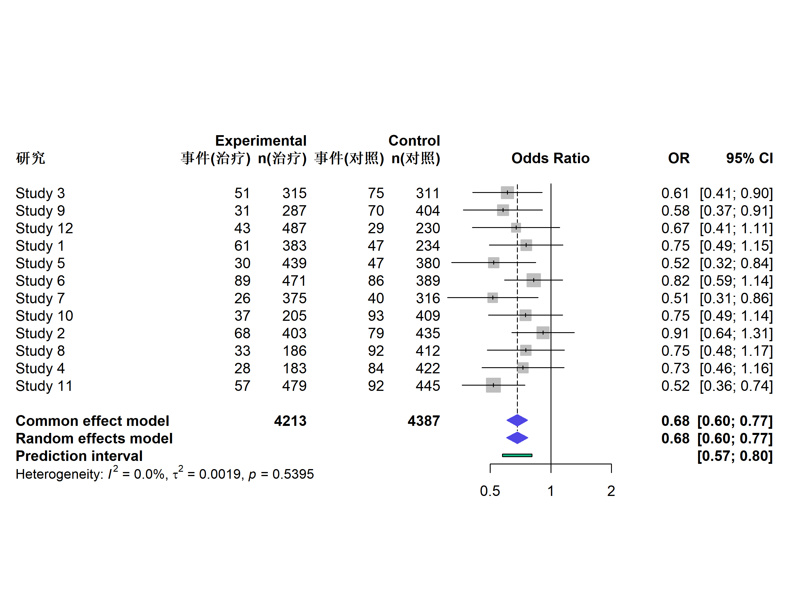
使用 metafor 包
# 使用 metafor 进行更灵活的分析
library(metafor)
# 计算对数 OR 及其方差
cvd_es <- escalc(
measure = "OR",
ai = event_treat, bi = nonevent_treat,
ci = event_control, di = nonevent_control,
data = cvd_studies
)
# 随机效应模型（REML 估计）
res_or <- rma(yi, vi, data = cvd_es, method = "REML")
summary(res_or)
Random-Effects Model (k = 12; tau^2 estimator: REML)
logLik deviance AIC BIC AICc
1.7312 -3.4624 0.5376 1.3334 2.0376
tau^2 (estimated amount of total heterogeneity): 0.0019 (SE = 0.0197)
tau (square root of estimated tau^2 value): 0.0436
I^2 (total heterogeneity / total variability): 3.99%
H^2 (total variability / sampling variability): 1.04
Test for Heterogeneity:
Q(df = 11) = 9.8991, p-val = 0.5395
Model Results:
estimate se zval pval ci.lb ci.ub
-0.3854 0.0629 -6.1296 <.0001 -0.5087 -0.2622 ***
---
Signif. codes: 0 '***' 0.001 '**' 0.01 '*' 0.05 '.' 0.1 ' ' 1# metafor 森林图
forest(res_or,
slab = cvd_studies$study,
header = c("研究", "OR [95% CI]"),
xlab = "比值比 (OR)",
atransf = exp, # 转换回 OR 尺度
at = log(c(0.25, 0.5, 1, 2)),
refline = 0,
col = "#4f46e5",
border = "#4f46e5"
)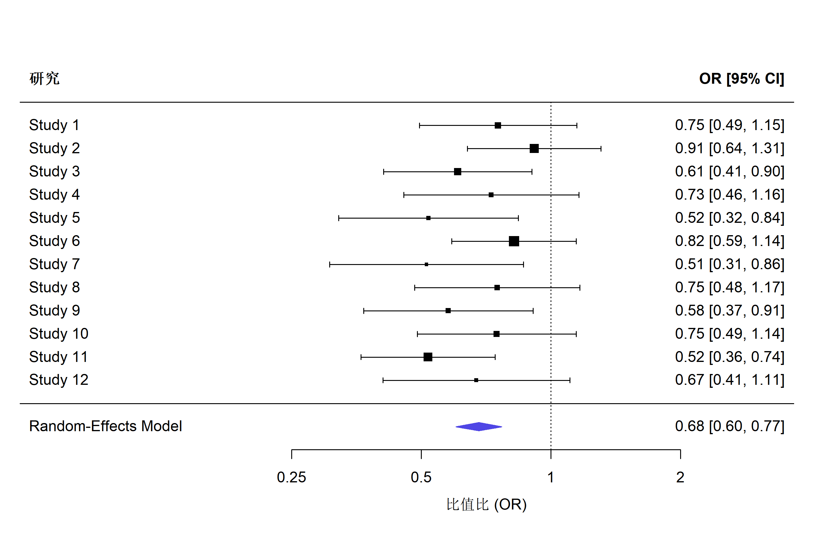
连续型结局 Meta 分析
均值差 (MD)
# 连续型结局 Meta 分析
meta_md <- metacont(
n.e = n_treat,
mean.e = mean_treat,
sd.e = sd_treat,
n.c = n_control,
mean.c = mean_control,
sd.c = sd_control,
studlab = study,
data = bp_studies,
sm = "MD", # 均值差
random = TRUE,
fixed = TRUE,
title = "降压干预效果 Meta 分析"
)
summary(meta_md)Review: 降压干预效果 Meta 分析
MD 95%-CI %W(common) %W(random)
Trial A -1.9012 [ -5.4320; 1.6296] 12.3 12.3
Trial B -3.2513 [ -6.3674; -0.1351] 15.8 15.8
Trial C -3.2311 [ -8.1351; 1.6729] 6.4 6.4
Trial D -4.9554 [ -8.7855; -1.1252] 10.4 10.4
Trial E -6.7273 [-10.4307; -3.0238] 11.2 11.2
Trial F -8.3130 [-13.2050; -3.4210] 6.4 6.4
Trial G -5.6602 [-10.6033; -0.7171] 6.3 6.3
Trial H -6.5647 [-10.3338; -2.7957] 10.8 10.8
Trial I -5.1885 [ -8.8380; -1.5391] 11.5 11.5
Trial J -3.1021 [ -7.2217; 1.0174] 9.0 9.0
Number of studies: k = 10
Number of observations: o = 1618 (o.e = 990, o.c = 628)
MD 95%-CI z p-value
Common effect model -4.6916 [-5.9291; -3.4541] -7.43 < 0.0001
Random effects model -4.6916 [-5.9291; -3.4541] -7.43 < 0.0001
Quantifying heterogeneity (with 95%-CIs):
tau^2 = 0 [0.0000; 8.9142]; tau = 0 [0.0000; 2.9857]
I^2 = 0.0% [0.0%; 62.4%]; H = 1.00 [1.00; 1.63]
Test of heterogeneity:
Q d.f. p-value
8.58 9 0.4765
Details of meta-analysis methods:
- Inverse variance method
- Restricted maximum-likelihood estimator for tau^2
- Q-Profile method for confidence interval of tau^2 and tau
- Calculation of I^2 based on Q# 森林图
forest(meta_md,
sortvar = year,
prediction = TRUE,
print.tau2 = TRUE,
leftcols = c("studlab", "n.e", "mean.e", "n.c", "mean.c"),
leftlabs = c("研究", "n(治疗)", "均值(治疗)", "n(对照)", "均值(对照)"),
xlab = "均值差 (mmHg)",
smlab = "干预组更优 ← → 对照组更优",
col.diamond = "#10b981",
col.diamond.lines = "#10b981"
)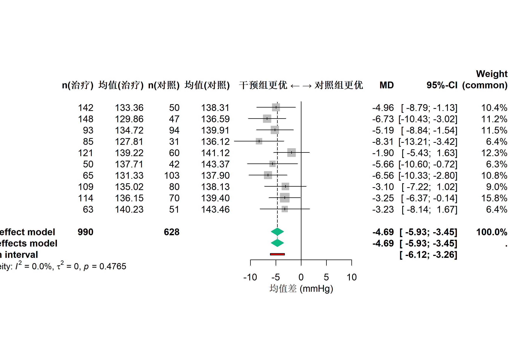
标准化均值差 (SMD)
当各研究使用不同测量工具时，使用 SMD：
# SMD 分析
meta_smd <- metacont(
n.e = n_treat,
mean.e = mean_treat,
sd.e = sd_treat,
n.c = n_control,
mean.c = mean_control,
sd.c = sd_control,
studlab = study,
data = bp_studies,
sm = "SMD", # 标准化均值差（Hedges' g）
method.smd = "Hedges",
random = TRUE
)
summary(meta_smd) SMD 95%-CI %W(common) %W(random)
Trial A -0.1753 [-0.4853; 0.1347] 11.2 11.2
Trial B -0.3043 [-0.6036; -0.0051] 12.0 12.0
Trial C -0.2360 [-0.6065; 0.1345] 7.9 7.9
Trial D -0.4259 [-0.7510; -0.1007] 10.2 10.2
Trial E -0.5214 [-0.8537; -0.1891] 9.8 9.8
Trial F -0.6016 [-1.0203; -0.1829] 6.1 6.1
Trial G -0.4663 [-0.8822; -0.0503] 6.2 6.2
Trial H -0.5063 [-0.8216; -0.1910] 10.8 10.8
Trial I -0.4064 [-0.6960; -0.1167] 12.8 12.8
Trial J -0.2148 [-0.5041; 0.0746] 12.9 12.9
Number of studies: k = 10
Number of observations: o = 1618 (o.e = 990, o.c = 628)
SMD 95%-CI z p-value
Common effect model -0.3699 [-0.4737; -0.2661] -6.98 < 0.0001
Random effects model -0.3699 [-0.4737; -0.2661] -6.98 < 0.0001
Quantifying heterogeneity (with 95%-CIs):
tau^2 = 0 [0.0000; 0.0396]; tau = 0 [0.0000; 0.1991]
I^2 = 0.0% [0.0%; 62.4%]; H = 1.00 [1.00; 1.63]
Test of heterogeneity:
Q d.f. p-value
6.38 9 0.7016
Details of meta-analysis methods:
- Inverse variance method
- Restricted maximum-likelihood estimator for tau^2
- Q-Profile method for confidence interval of tau^2 and tau
- Calculation of I^2 based on Q
- Hedges' g (bias corrected standardised mean difference; using exact formulae)异质性评估
异质性指标
| 指标 | 解读 |
|---|---|
| Q 统计量 | 检验异质性是否存在（p < 0.1 提示异质性） |
| I² | 异质性占总变异的比例（25%低, 50%中, 75%高） |
| τ² | 研究间方差（随机效应的方差分量） |
| H² | 总变异/抽样误差变异 |
# 从 meta 对象中提取异质性指标
cat("Q 统计量:", meta_or$Q, ", df =", meta_or$df.Q, ", p =", meta_or$pval.Q, "\n")Q 统计量: 9.899119 , df = 11 , p = 0.5394837 cat("I² =", round(meta_or$I2 * 100, 1), "%\n")I² = 0 %cat("τ² =", round(meta_or$tau2, 4), "\n")τ² = 0.0019 可视化异质性
# 使用 metafor 绑制 Baujat 图（识别异质性来源）
baujat(res_or, main = "Baujat 图：识别异质性来源")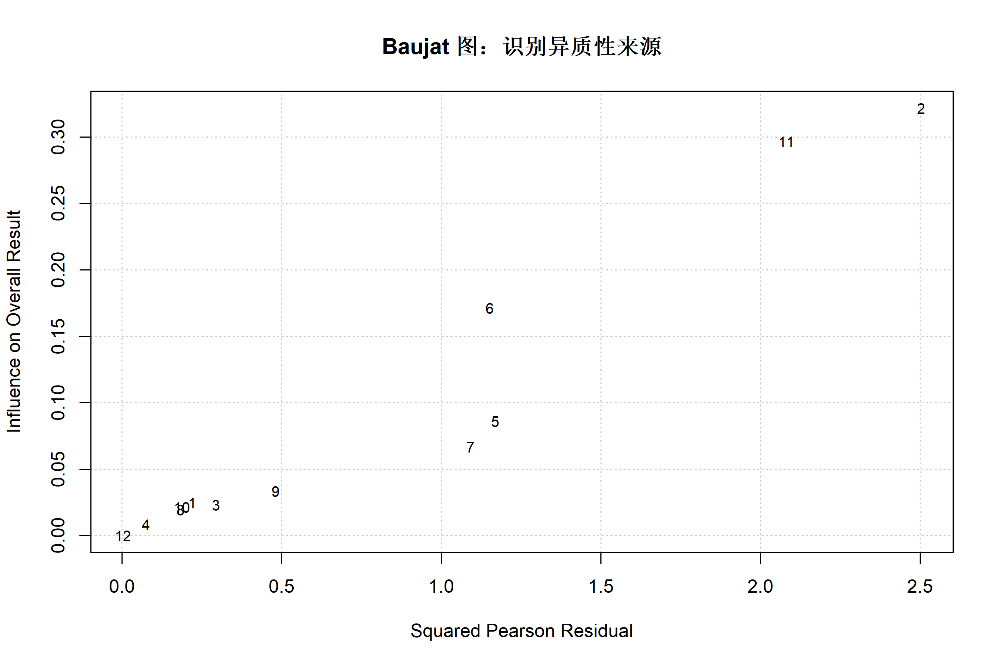
亚组分析
# 添加亚组变量
cvd_studies <- cvd_studies |>
mutate(
sample_size = ifelse(n_treat + n_control > 300, "大样本", "小样本"),
region = sample(c("亚洲", "欧美"), 12, replace = TRUE)
)
# 按样本量分组的亚组分析
meta_subgroup <- metabin(
event.e = event_treat,
n.e = n_treat,
event.c = event_control,
n.c = n_control,
studlab = study,
data = cvd_studies,
sm = "OR",
random = TRUE,
subgroup = sample_size, # 亚组变量
print.subgroup.name = TRUE
)
summary(meta_subgroup) OR 95%-CI %W(common) %W(random) sample_size
Study 1 0.7537 [0.4948; 1.1482] 7.5 8.2 大样本
Study 2 0.9147 [0.6402; 1.3070] 9.7 11.3 大样本
Study 3 0.6079 [0.4088; 0.9039] 9.7 9.2 大样本
Study 4 0.7269 [0.4552; 1.1607] 6.6 6.7 大样本
Study 5 0.5197 [0.3215; 0.8401] 7.2 6.4 大样本
Study 6 0.8209 [0.5887; 1.1447] 11.7 12.9 大样本
Study 7 0.5140 [0.3061; 0.8632] 6.2 5.5 大样本
Study 8 0.7502 [0.4822; 1.1671] 7.2 7.5 大样本
Study 9 0.5778 [0.3673; 0.9090] 8.0 7.1 大样本
Study 10 0.7483 [0.4895; 1.1440] 7.8 8.1 大样本
Study 11 0.5183 [0.3618; 0.7424] 12.9 11.1 大样本
Study 12 0.6712 [0.4073; 1.1062] 5.5 5.9 大样本
Number of studies: k = 12
Number of observations: o = 8600 (o.e = 4213, o.c = 4387)
Number of events: e = 1388
OR 95%-CI z p-value
Common effect model 0.6800 [0.6030; 0.7669] -6.29 < 0.0001
Random effects model 0.6802 [0.6013; 0.7694] -6.13 < 0.0001
Quantifying heterogeneity (with 95%-CIs):
tau^2 = 0.0019 [0.0000; 0.0647]; tau = 0.0436 [0.0000; 0.2544]
I^2 = 0.0% [0.0%; 58.3%]; H = 1.00 [1.00; 1.55]
Test of heterogeneity:
Q d.f. p-value
9.90 11 0.5395
Results for subgroups (common effect model):
k OR 95%-CI Q I^2
sample_size = 大样本 12 0.6800 [0.6030; 0.7669] 9.90 0.0%
Test for subgroup differences (common effect model):
Q d.f. p-value
Between groups 0.00 0 --
Results for subgroups (random effects model):
k OR 95%-CI tau^2 tau
sample_size = 大样本 12 0.6802 [0.6013; 0.7694] 0.0019 0.0436
Test for subgroup differences (random effects model):
Q d.f. p-value
Between groups 0.00 0 --
Details of meta-analysis methods:
- Mantel-Haenszel method (common effect model)
- Inverse variance method (random effects model)
- Restricted maximum-likelihood estimator for tau^2
- Q-Profile method for confidence interval of tau^2 and tau
- Calculation of I^2 based on Q# 亚组森林图
forest(meta_subgroup,
sortvar = year,
print.subgroup.name = TRUE,
subgroup.name = "样本量分组",
col.diamond = "#4f46e5",
col.diamond.lines = "#4f46e5"
)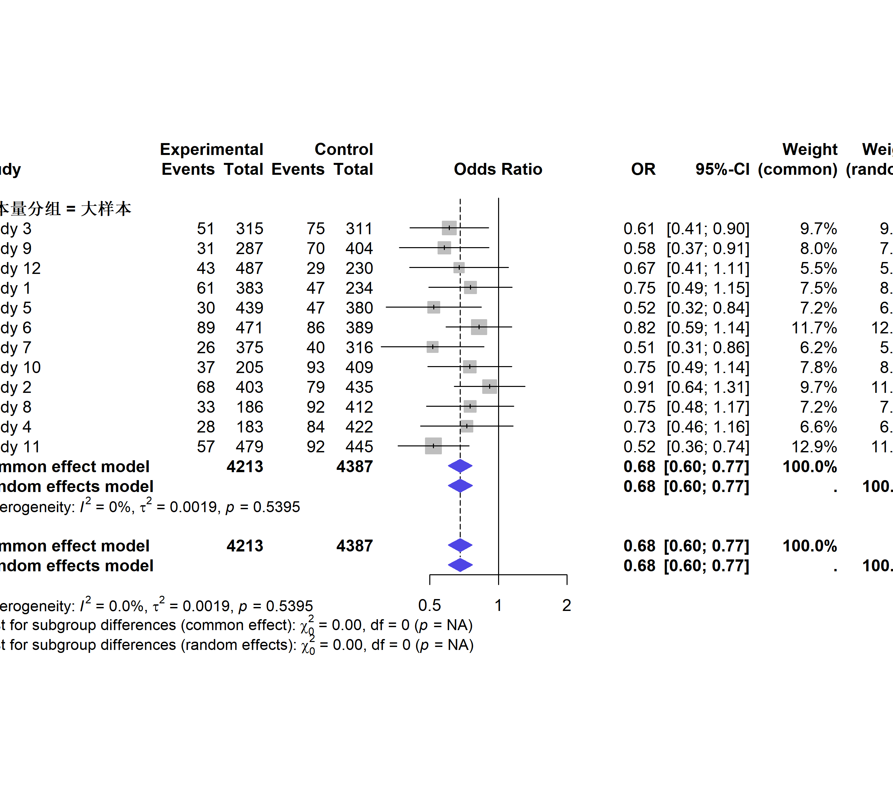
Meta 回归
探索异质性来源的定量方法：
# 使用 metafor 进行 Meta 回归
cvd_es <- cvd_es |>
mutate(
year = cvd_studies$year,
total_n = cvd_studies$n_treat + cvd_studies$n_control
)
# Meta 回归：年份作为调节变量
res_metareg <- rma(yi, vi, mods = ~year, data = cvd_es, method = "REML")
summary(res_metareg)
Mixed-Effects Model (k = 12; tau^2 estimator: REML)
logLik deviance AIC BIC AICc
1.1411 -2.2823 3.7177 4.6255 7.7177
tau^2 (estimated amount of residual heterogeneity): 0.0052 (SE = 0.0226)
tau (square root of estimated tau^2 value): 0.0722
I^2 (residual heterogeneity / unaccounted variability): 10.14%
H^2 (unaccounted variability / sampling variability): 1.11
R^2 (amount of heterogeneity accounted for): 0.00%
Test for Residual Heterogeneity:
QE(df = 10) = 9.8667, p-val = 0.4523
Test of Moderators (coefficient 2):
QM(df = 1) = 0.0151, p-val = 0.9022
Model Results:
estimate se zval pval ci.lb ci.ub
intrcpt 5.3484 46.6853 0.1146 0.9088 -86.1531 96.8500
year -0.0028 0.0231 -0.1229 0.9022 -0.0482 0.0425
---
Signif. codes: 0 '***' 0.001 '**' 0.01 '*' 0.05 '.' 0.1 ' ' 1# 可视化 Meta 回归
regplot(res_metareg,
xlab = "发表年份",
ylab = "log(OR)",
main = "Meta 回归：年份与效应量关系",
col = "#4f46e5",
lcol = "#ef4444"
)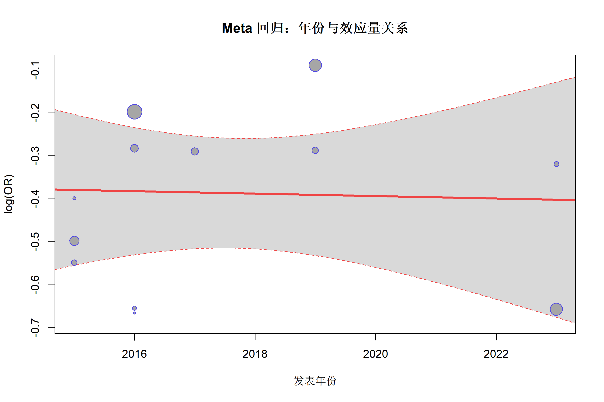
# 多变量 Meta 回归
res_metareg2 <- rma(yi, vi, mods = ~ year + total_n, data = cvd_es, method = "REML")
summary(res_metareg2)
Mixed-Effects Model (k = 12; tau^2 estimator: REML)
logLik deviance AIC BIC AICc
0.5880 -1.1759 6.8241 7.6130 16.8241
tau^2 (estimated amount of residual heterogeneity): 0.0105 (SE = 0.0268)
tau (square root of estimated tau^2 value): 0.1023
I^2 (residual heterogeneity / unaccounted variability): 18.22%
H^2 (unaccounted variability / sampling variability): 1.22
R^2 (amount of heterogeneity accounted for): 0.00%
Test for Residual Heterogeneity:
QE(df = 9) = 9.8242, p-val = 0.3649
Test of Moderators (coefficients 2:3):
QM(df = 2) = 0.0690, p-val = 0.9661
Model Results:
estimate se zval pval ci.lb ci.ub
intrcpt 0.1601 51.0940 0.0031 0.9975 -99.9823 100.3025
year -0.0002 0.0254 -0.0085 0.9932 -0.0500 0.0495
total_n -0.0002 0.0006 -0.2499 0.8027 -0.0014 0.0010
---
Signif. codes: 0 '***' 0.001 '**' 0.01 '*' 0.05 '.' 0.1 ' ' 1发表偏倚评估
漏斗图
# 基础漏斗图
funnel(res_or,
main = "漏斗图",
xlab = "log(OR)",
col = "#4f46e5",
pch = 19
)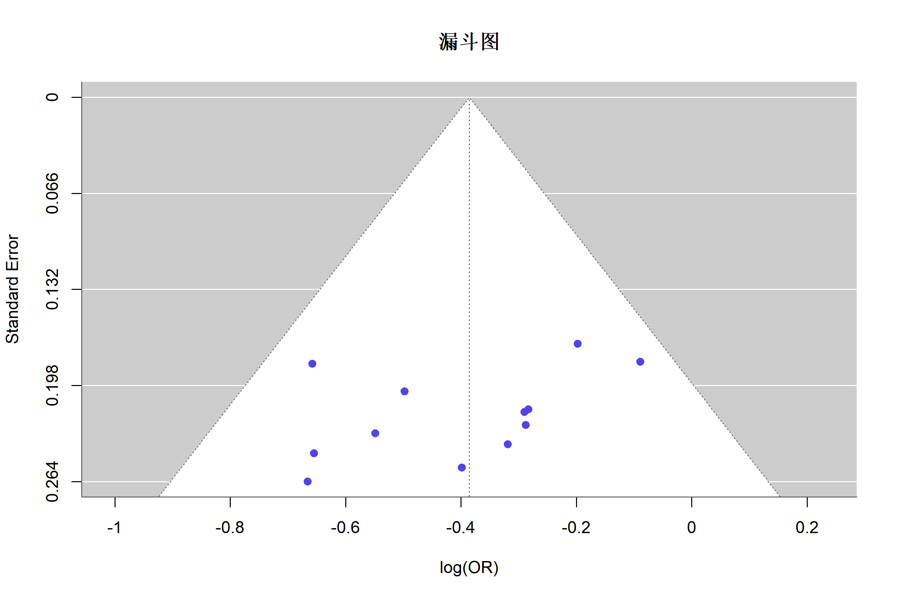
# 带等高线的漏斗图
funnel(res_or,
level = c(90, 95, 99),
shade = c("white", "gray80", "gray60"),
refline = 0,
main = "漏斗图（带置信区间）"
)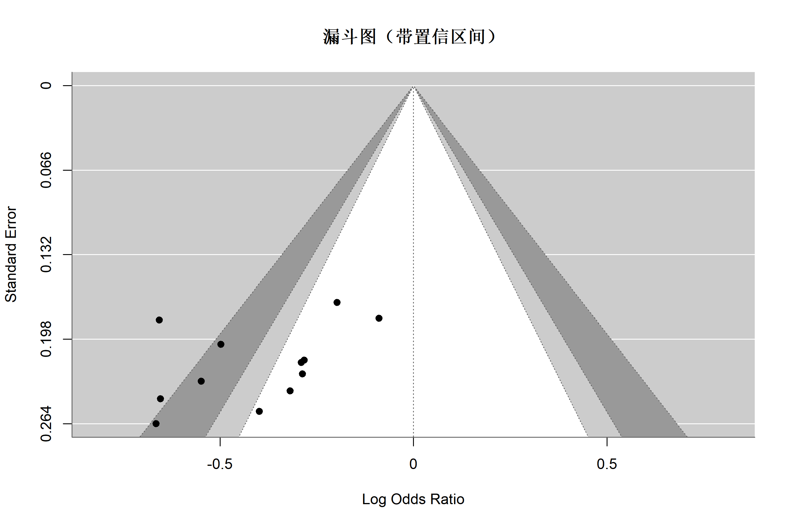
Egger 检验
# Egger 线性回归检验
regtest(res_or)
Regression Test for Funnel Plot Asymmetry
Model: mixed-effects meta-regression model
Predictor: standard error
Test for Funnel Plot Asymmetry: z = -1.3452, p = 0.1786
Limit Estimate (as sei -> 0): b = 0.2138 (CI: -0.6661, 1.0936)# p < 0.05 提示存在发表偏倚Begg 检验
# Begg 秩相关检验
ranktest(res_or)
Rank Correlation Test for Funnel Plot Asymmetry
Kendall's tau = -0.4242, p = 0.0629剪补法 (Trim and Fill)
# 剪补法估计缺失研究
tf_result <- trimfill(res_or)
summary(tf_result)
Estimated number of missing studies on the right side: 2 (SE = 2.3928)
Random-Effects Model (k = 14; tau^2 estimator: REML)
logLik deviance AIC BIC AICc
0.3267 -0.6535 3.3465 4.4764 4.5465
tau^2 (estimated amount of total heterogeneity): 0.0115 (SE = 0.0222)
tau (square root of estimated tau^2 value): 0.1074
I^2 (total heterogeneity / total variability): 20.16%
H^2 (total variability / sampling variability): 1.25
Test for Heterogeneity:
Q(df = 13) = 15.5142, p-val = 0.2764
Model Results:
estimate se zval pval ci.lb ci.ub
-0.3338 0.0642 -5.1982 <.0001 -0.4596 -0.2079 ***
---
Signif. codes: 0 '***' 0.001 '**' 0.01 '*' 0.05 '.' 0.1 ' ' 1# 剪补后的漏斗图
funnel(tf_result,
main = "剪补法漏斗图",
xlab = "log(OR)"
)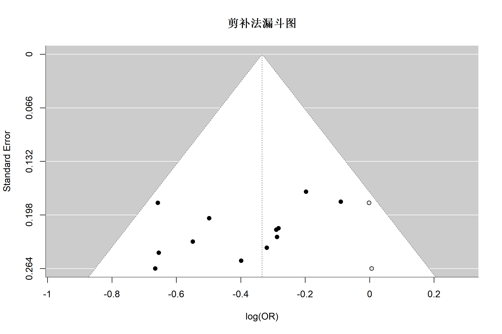
敏感性分析
逐一剔除法
# Leave-one-out 分析
loo_result <- leave1out(res_or)
print(loo_result)
estimate se zval pval ci.lb ci.ub Q Qp tau2 I2
-1 -0.3961 0.0678 -5.8431 0.0000 -0.5290 -0.2633 9.6547 0.4713 0.0048 9.5850
-2 -0.4225 0.0653 -6.4651 0.0000 -0.5506 -0.2944 6.9302 0.7320 0.0000 0.0000
-3 -0.3751 0.0676 -5.5515 0.0000 -0.5075 -0.2427 9.5537 0.4805 0.0041 8.0519
-4 -0.3916 0.0671 -5.8327 0.0000 -0.5232 -0.2600 9.8186 0.4565 0.0047 9.4386
-5 -0.3666 0.0641 -5.7186 0.0000 -0.4923 -0.2410 8.6030 0.5701 0.0007 1.6251
-6 -0.4129 0.0665 -6.2102 0.0000 -0.5433 -0.2826 8.4995 0.5802 0.0007 1.3917
-7 -0.3688 0.0641 -5.7539 0.0000 -0.4945 -0.2432 8.7058 0.5602 0.0011 2.4771
-8 -0.3948 0.0674 -5.8539 0.0000 -0.5270 -0.2626 9.6989 0.4673 0.0047 9.4327
-9 -0.3733 0.0660 -5.6568 0.0000 -0.5027 -0.2440 9.3569 0.4986 0.0029 6.0337
-10 -0.3954 0.0678 -5.8323 0.0000 -0.5282 -0.2625 9.6918 0.4679 0.0049 9.6984
-11 -0.3499 0.0653 -5.3583 0.0000 -0.4778 -0.2219 7.4042 0.6868 0.0000 0.0000
-12 -0.3858 0.0666 -5.7892 0.0000 -0.5164 -0.2552 9.8958 0.4497 0.0044 8.9323
H2
-1 1.1060
-2 1.0000
-3 1.0876
-4 1.1042
-5 1.0165
-6 1.0141
-7 1.0254
-8 1.1042
-9 1.0642
-10 1.1074
-11 1.0000
-12 1.0981 # 可视化逐一剔除影响（需要手动处理数据）
# 使用 loo_result 中的数据绑制
forest(loo_result,
xlab = "比值比 (OR)",
atransf = exp,
refline = exp(coef(res_or))
)累积 Meta 分析
# 按年份累积 Meta 分析
cvd_es_sorted <- cvd_es[order(cvd_es$year), ]
res_sorted <- rma(yi, vi, data = cvd_es_sorted, method = "REML")
cumul_result <- cumul(res_sorted, order = cvd_es_sorted$year)
forest(cumul_result,
header = c("累积研究", "OR [95% CI]"),
xlab = "比值比 (OR)",
atransf = exp,
refline = 1,
col = "#10b981",
main = "累积 Meta 分析"
)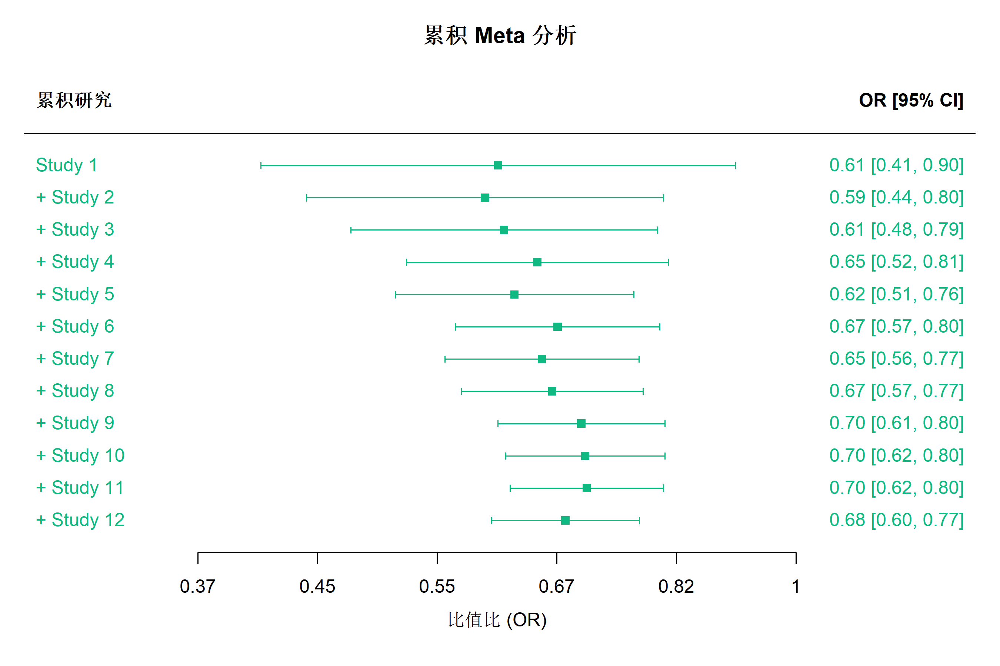
影响分析
# 影响诊断
inf <- influence(res_or)
plot(inf, layout = c(4, 2))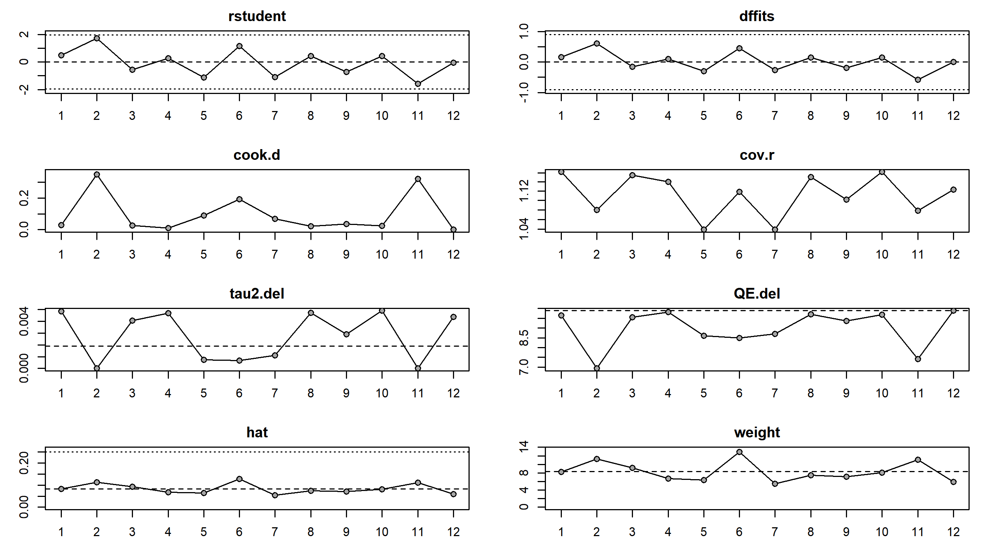
效应指标选择
二分类结局
| 指标 | 代码 | 适用场景 |
|---|---|---|
| 比值比 OR | sm = "OR" |
病例对照研究、横断面 |
| 相对危险度 RR | sm = "RR" |
队列研究、RCT |
| 风险差 RD | sm = "RD" |
需要绝对效应时 |
连续型结局
| 指标 | 代码 | 适用场景 |
|---|---|---|
| 均值差 MD | sm = "MD" |
相同测量工具 |
| 标准化均值差 SMD | sm = "SMD" |
不同测量工具 |
| 比率均值 ROM | sm = "ROM" |
比例变化 |
高质量出版森林图
# 自定义高质量森林图
forest(meta_or,
# 排序
sortvar = year,
# 显示内容
prediction = TRUE,
print.tau2 = TRUE,
print.I2 = TRUE,
print.pval.Q = TRUE,
# 左侧列
leftcols = c("studlab", "year", "event.e", "n.e", "event.c", "n.c"),
leftlabs = c("研究", "年份", "事件", "n", "事件", "n"),
# 右侧列
rightcols = c("effect", "ci", "w.random"),
rightlabs = c("OR", "95% CI", "权重(%)"),
# 颜色设置
col.diamond = "#4f46e5",
col.diamond.lines = "#4f46e5",
col.predict = "#10b981",
col.predict.lines = "#10b981",
# 标签
label.e = "治疗组",
label.c = "对照组",
label.left = "支持治疗",
label.right = "支持对照",
# 其他设置
comb.fixed = FALSE, # 不显示固定效应
overall.hetstat = TRUE,
test.overall.random = TRUE,
# 字体
fontsize = 9,
spacing = 1.2,
# 标题
smlab = "比值比 (OR)"
)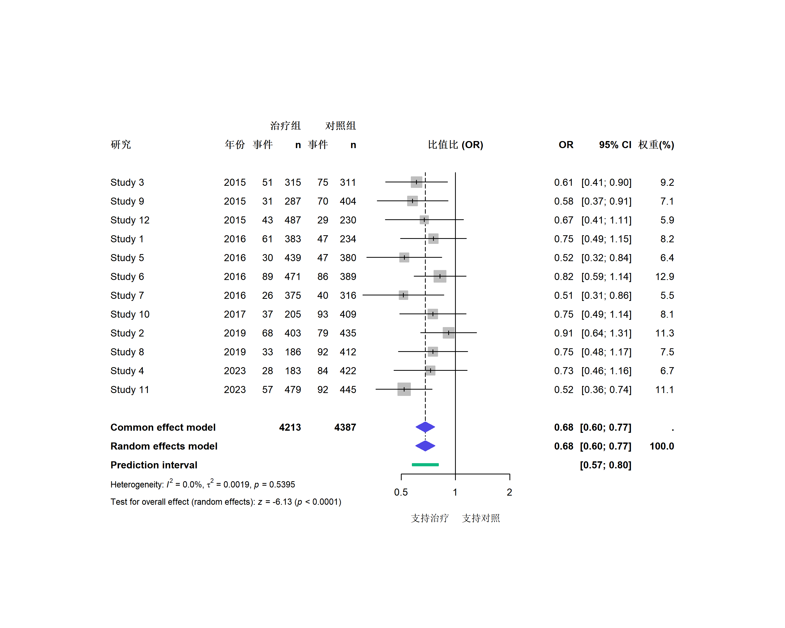
常见问题与陷阱
1. 固定 vs 随机效应模型选择
| 情况 | 推荐模型 |
|---|---|
| 研究设计/人群高度相似 | 固定效应 |
| I² > 50% | 随机效应 |
| 目标是泛化到更广人群 | 随机效应 |
| 研究数量 < 5 | 固定效应（随机效应估计不稳定） |
2. 小研究效应
# 除 Egger 检验外，还可以比较固定和随机效应结果
# 若随机效应更极端，可能存在小研究效应3. 零事件处理
# 在 metabin 中处理零事件
meta_zero <- metabin(
event.e = event_treat,
n.e = n_treat,
event.c = event_control,
n.c = n_control,
studlab = study,
data = cvd_studies,
sm = "OR",
incr = 0.5, # 连续性校正
allincr = FALSE # 只对零事件研究添加
)4. 质量评估
# Meta 分析应结合研究质量评估
# 常用工具：
# - RCT: Cochrane RoB 2
# - 观察性研究: Newcastle-Ottawa Scale
# - 诊断研究: QUADAS-2PRISMA 流程图
# 使用 PRISMA2020 包创建流程图
# install.packages("PRISMA2020")
library(PRISMA2020)
PRISMA_data(
identification = list(
records_identified = 1250,
records_removed_before = 150,
records_screened = 1100
),
screening = list(
records_excluded = 950,
reports_sought = 150,
reports_not_retrieved = 10,
reports_assessed = 140
),
included = list(
reports_excluded = 128,
new_studies = 12,
new_reports = 12
)
) |>
PRISMA_flowdiagram()完整分析模板
# ========== Meta 分析完整流程 ==========
library(meta)
library(metafor)
# 1. 数据准备（二分类结局）
meta_result <- metabin(
event.e = event_treat, n.e = n_treat,
event.c = event_control, n.c = n_control,
studlab = study, data = data,
sm = "OR", random = TRUE
)
# 2. 查看结果
summary(meta_result)
# 3. 森林图
forest(meta_result, prediction = TRUE)
# 4. 异质性评估
cat("I² =", meta_result$I2, "\n")
cat("τ² =", meta_result$tau2, "\n")
# 5. 发表偏倚
funnel(meta_result)
metabias(meta_result, method = "linreg")
# 6. 敏感性分析
metainf(meta_result)总结
| 步骤 | 内容 | R 函数 |
|---|---|---|
| 效应量计算 | OR/RR/MD/SMD | metabin(), metacont() |
| 模型拟合 | 固定/随机效应 | method, random 参数 |
| 森林图 | 结果可视化 | forest() |
| 异质性 | I², τ², Q | 模型输出 |
| 亚组分析 | 探索调节效应 | subgroup 参数 |
| Meta 回归 | 定量调节分析 | rma(..., mods = ) |
| 发表偏倚 | 漏斗图、Egger | funnel(), regtest() |
| 敏感性分析 | 逐一剔除 | leave1out() |
报告 Meta 分析的 Checklist (PRISMA)
推荐阅读
- Borenstein M et al. Introduction to Meta-Analysis
- Higgins JPT, Green S. Cochrane Handbook for Systematic Reviews
- R metafor 文档
- R meta 文档